PUBLIC PAGES
公開ページ一覧
公開中の GitHub Pages だけを確認して並べています。 更新日時が新しい順に、プレイ中、観察中、編集中など、その作品の中心になる体験が見えるスクリーンショットを選びました。
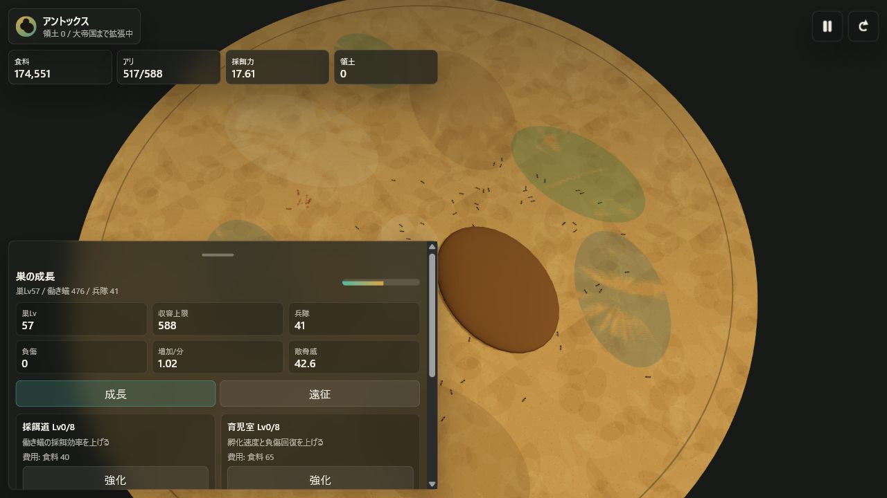
antEX
Updated 2026.06.30小さな巣と少数のアリから、地下帝国を広げていく3D放置ゲーム。 食料、収容上限、兵隊、遠征を管理しながら、採餌と外敵への備えを積み上げてコロニーを育てます。
ページを開く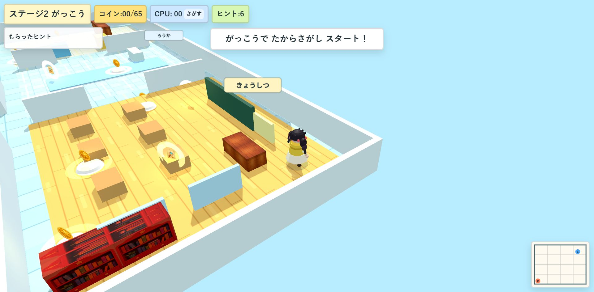
さがせ！たからものを！
Updated 2026.06.30学校の教室などを歩き回り、ヒントを頼りに宝物を探す3D探索ゲーム。 コインや目印を集めながら、部屋のどこを調べるかを観察して進めます。
ページを開く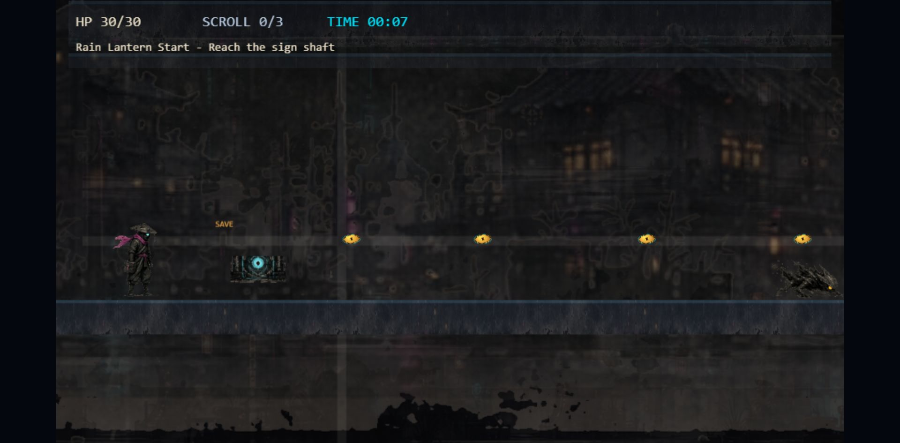
Neon Ronin: Shadow Courier
Updated 2026.06.30雨のネオン街を進む横スクロールアクション。 足場、敵、セーブポイント、巻物の回収状況を読みながら、影の濃いステージを進めます。
ページを開く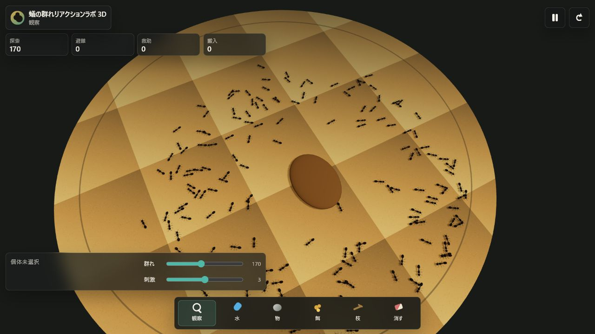
Ant Colony Reaction Lab
Updated 2026.06.27フェロモンや環境反応で群れの動きが変わる3D観察ラボ。 個体の小さな反応が、探索、密集、迂回といった群れ全体のふるまいへ広がる様子を眺められます。
ページを開く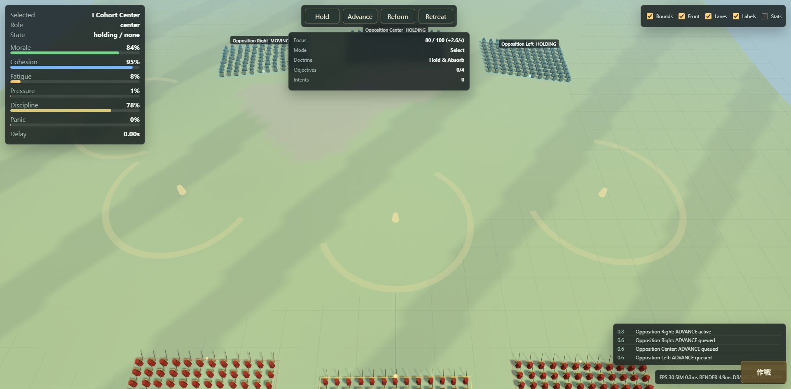
Roman Battle 3D Sim
Updated 2026.06.24古代ローマ風の隊列をまとめ、前進、再整列、後退などの指示で戦線を動かす3D会戦シミュレーション。 士気、疲労、隊列維持を見ながら、部隊全体の崩れ方を観察できます。
ページを開く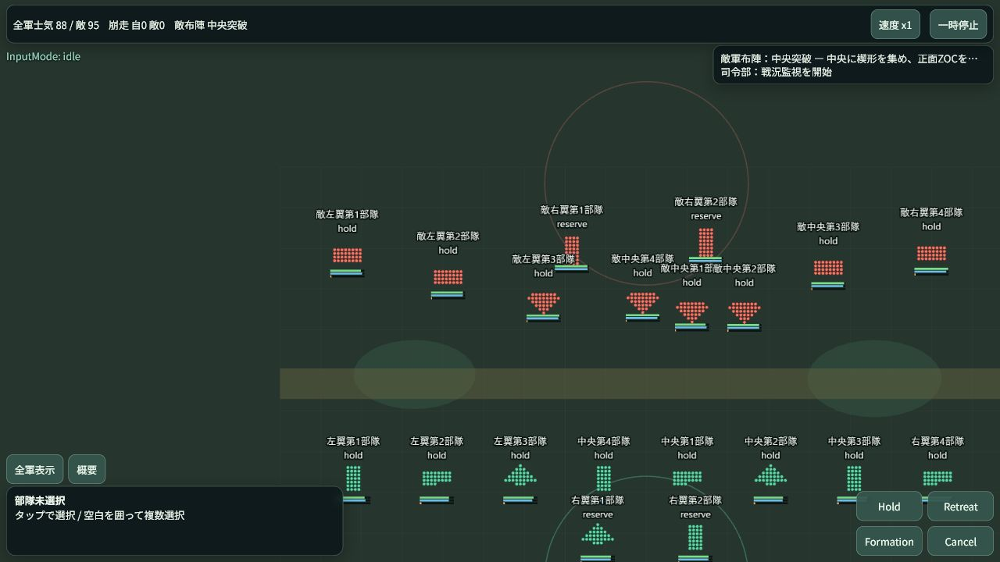
Intent Battle Sim
Updated 2026.06.23部隊を直接動かすのではなく、矢印や包囲の意図を描いて戦線を再配置する戦術シミュレーション。 命令の伝達遅れと士気の崩れを読みながら、押す、引く、立て直す判断を試します。
ページを開く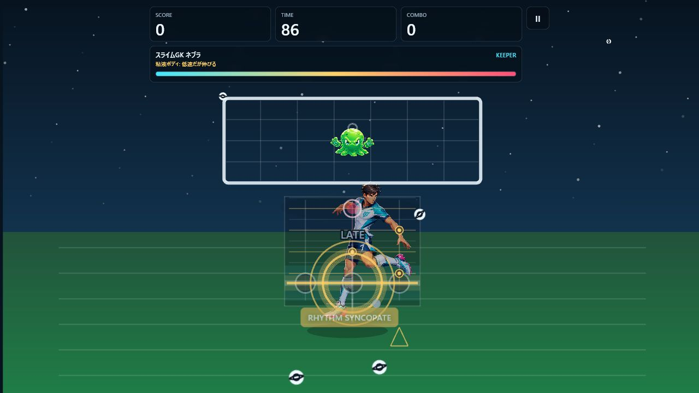
Alien Kick Buster
Updated 2026.06.23夜のフィールドで接近してくるエイリアンを見切り、間合いとタイミングで蹴り返すアーケードアクション。 守る、引きつける、反撃するという短い判断の連続を前面に出しています。
ページを開く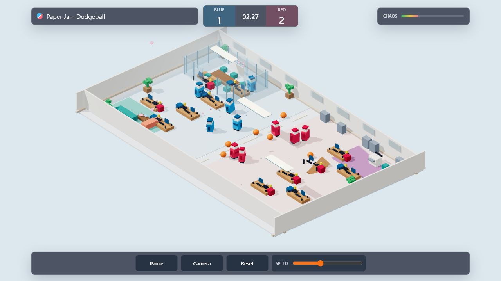
Paper Jam Dodgeball
Updated 2026.06.23紙工作のような選手たちが立体コートでぶつかる3Dドッジボール。 小さなキャラクターの密集、回避、投げ合いが一目で見える、にぎやかな試合感を狙ったプロトタイプです。
ページを開く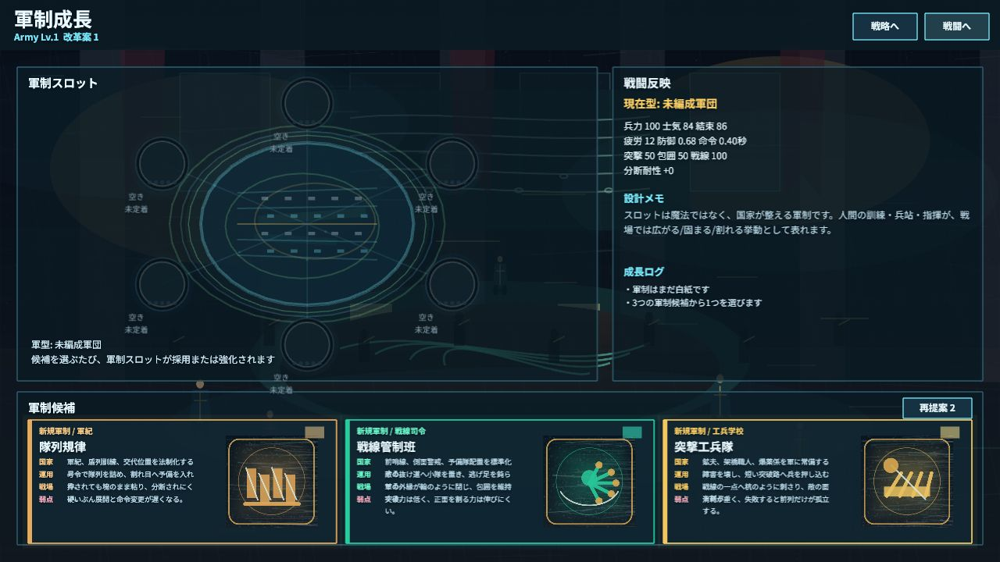
Slime Battle Sim
Updated 2026.06.23弾性をもつユニットを編成し、ぶつかり方と崩れ方を読むスライム戦術シム。 準備フェーズで性質を選び、戦場で軍団が押し合う様子から次の編成を考える遊びです。
ページを開く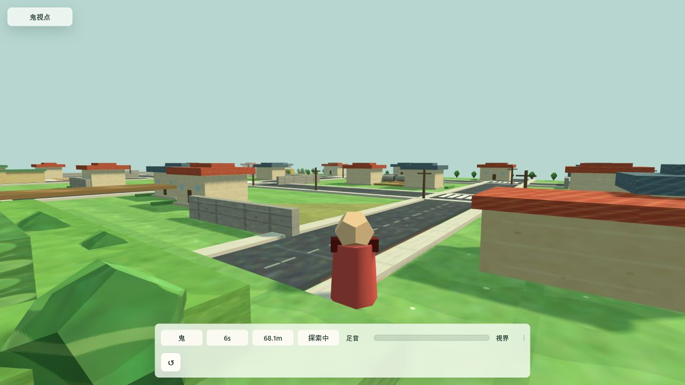
Voxel Town 3D
Updated 2026.06.22ローポリの町を鬼視点で歩き、AIで逃げる相手を探す3Dかくれんぼプロトタイプ。 視界コーン、足音メーター、視界メーター、捕獲判定で、見つける緊張感を小さく試しています。
ページを開く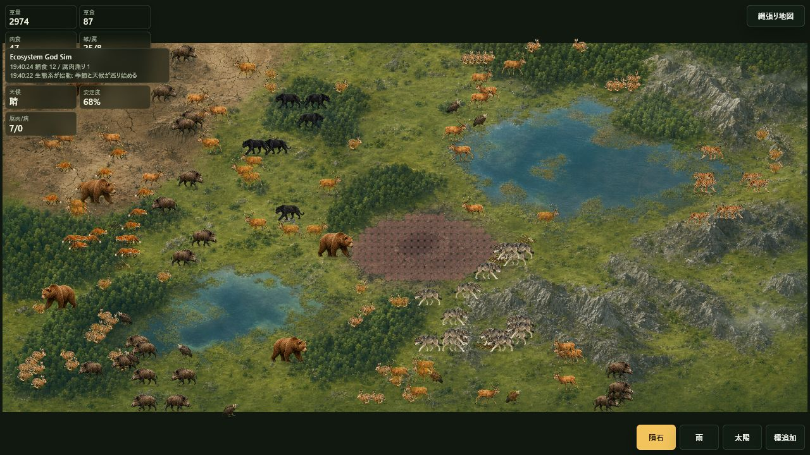
Ecosystem God Sim
Updated 2026.06.21地形、植物、草食動物、捕食者が絡み合う生態系サンドボックス。 雨や火などの介入が、増殖、移動、食物連鎖のバランスをどう崩し、どう回復させるかを観察できます。
ページを開く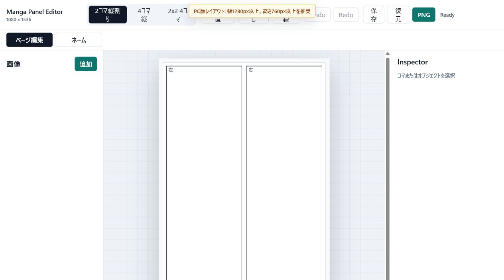
Manga Panel Editor
Updated 2026.06.21漫画ページのコマ割りをブラウザ上で組む小さな制作ツール。 比率や位置を触りながら、読みやすい余白、コマの流れ、書き出し前の画面設計を素早く試せます。
ページを開く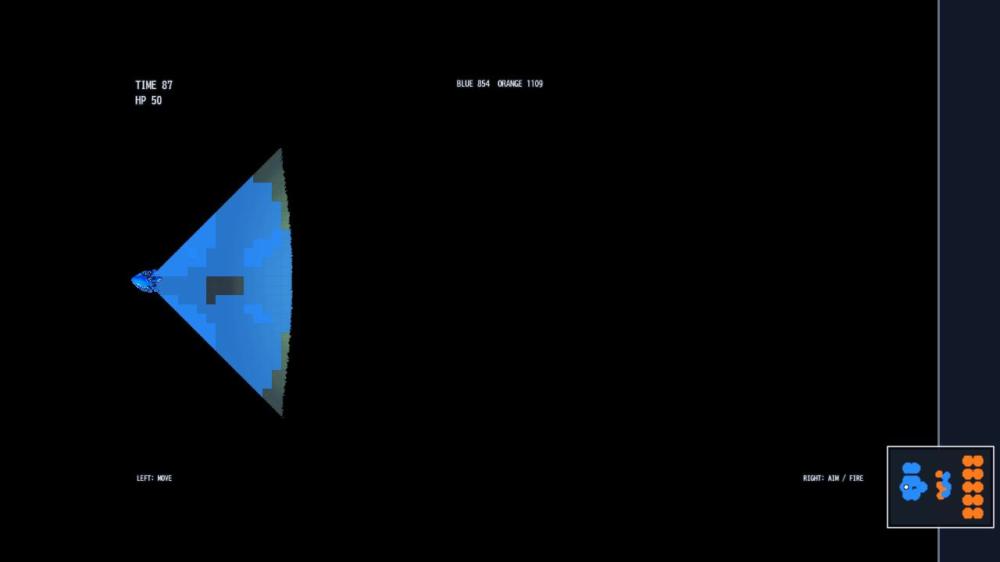
Splash Tomb
Updated 2026.06.18暗い墓所のような空間を、青い三角形の機体で進むミニアクション。 視界の狭さ、敵や障害物の配置、方向転換の手触りで探索と緊張感を作っています。
ページを開く